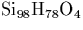
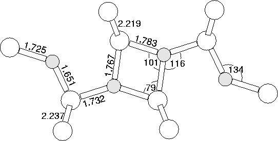

It is possible construct a thermal donor consisting of 4 Oi atoms in a different way to the di-y-lid. This can be done by removing Oi from the 5 Oi thermal donor described above. Removing the oxygen atom on the C2 axis leads to the di-y-lid model, however removing one of the outer oxygen atoms, simply shortens the chain and removes some compression from the defect core.
The defect relaxed by rotating the core around to give an oxygen `square' flanked by two standard divalent Oi atoms. This has C2h rotational symmetry, the same as that of the N2i pair. The eigenvalues are given in Figure 9.10c and its double donor character can be seen. Distortion in the structure was caused by cluster assymetry, so the calculations were repeated in a C2h symmetry constrained 180 atom cluster, .
The structure is shown in Figure 9.12. The bonding in this defect is quite different to that of the di-y-lid, having no core reconstructed Si-Si bond. Whereas the di-y-lid can be thought of as two dimers held apart by two empty Si-Si bonds, this square-based structure could be formed from two dimers with only a single empty Si-Si bond between them. Such a structure does not have the required C2v symmetry, and thus this could only be a candidate for TD1.
|  |
The vibrational modes of this structure are given in Table 9.4, along with their isotope shifts and their absorption intensities. This model has two strong absorptions at 904 and 742 cm-1. The experimental TD1 modes lie at 975 and 716 cm-1, unfortunately their 18O isotope shifts have not yet been reported[239]. Thus the calculated modes are in roughly the right range, and without isotopic shift data these LVMs are not sufficient to exclude this as a model for TD1. The primary absorptions for TD1 are still quite weak, so it is unlikely that the mode at 811 cm-1 will be observable. In the assymetric cluster this structure was nearly 1 eV more stable than the di-y-lid and was the lowest energy 4O donor structure, although the error on such a figure will be large, and also influenced by cluster surface effects.
Symmetry analysis of TD1 would be a useful tool to distinguish between these models since this structure has well defined C2h symmetry. Note that if this is TD1 it would add weight to the suggestion that the di-y-lid is TD2. This is because TD1 and TD2 are believed to be isomeric, since their respective electrically inactive forms show vibrational absorption at the same frequency[239]. In conclusion, symmetry excludes this `flanked square' structure as anything except TD1, but the calculations would be consistent with what is currently known of TD1. Further experimental data is required to either confirm the assignment or eliminate it from enquiries.
| 3cLocal Vibrational Modes (cm-1) | Dipole moment squared | ||
| 16O | 17O | 18O | for 16 O |
| 946 | 921 | 898 | 0.000 |
| 904 | 882 | 862 | 0.179 |
|---|---|---|---|
| 854 | 831 | 811 | 0.000 |
| 811 | 791 | 773 | 0.100 |
| 742 | 725 | 711 | 0.206 |
| 741 | 723 | 706 | 0.000 |